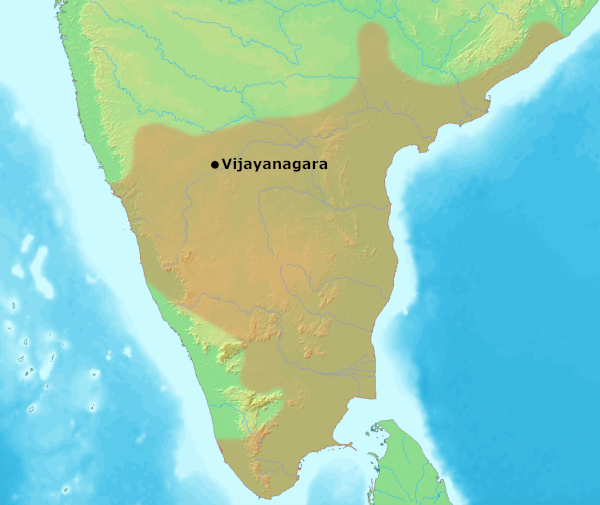

Image Viewer
Full Architectural & Cartographic Inspection
100%
Medieval Indian History • Module 10: Vijayanagar & Bahmani Era
Founded on the banks of the Tungabhadra by Harihara & Bukka with the blessings of sage Vidyaranya, the Vijayanagar Empire served as the mighty southern bulwark of Hindu culture. Reaching its zenith under Emperor Krishnadeva Raya, its golden age ended at the fateful Battle of Talikota (1565 AD) against the combined Deccan Sultanates.

Capital Hampi featured the iconic Vittala Temple with musical granite pillars and monolithic Stone Chariot.
Sangama, Saluva, Tuluva, and Aravidu ruling houses spanning 310 years.
Founded by brothers Harihara I & Bukka I under the guidance of sage Vidyaranya of Sringeri.
Founded by Saluva Narasimha to prevent kingdom fragmentation from internal anarchy.
Founded by Vira Narasimha. Its crowned jewel was Krishnadeva Raya (1509–1529 AD).
Founded by Tirumala (brother of fallen Rama Raya) after the disaster of Talikota.
Scholar-emperor, warrior-monarch, and supreme patron of art and literature.
Accomplished scholar in Telugu and Sanskrit:
Court (*Bhuvanavijayam*) patronized eight literary titans:
Constructed monumental temple complexes at Hampi:
Also known as the Battle of Rakshasi-Tangadi or Bannihatti.
De facto ruler Rama Raya played one Deccan Sultanate against another for decades. Alarmed by his growing interference, four Sultanates formed a historic military league: Bijapur, Golconda, Ahmadnagar, and Bidar (Berar refrained).
Feudal military commanders called Nayakas (or *Poligars*) were granted revenue tracts (*Amaram*) in lieu of salary, tasked with maintaining a designated quota of infantry and cavalry.
Village governance was entrusted to a hereditary college of 12 functionaries called Ayagars (accountants, watchmen, blacksmiths) paid through tax-free land plots (*Manya*).
Standard pure gold coin of the empire weighing 52 grains, stamped with figures of Lord Venkateshwara, Varaha, or Gandabherunda (double-headed eagle).
Founded in 1347 AD by Alauddin Hasan Bahman Shah; later splintered into five sovereign sultanates.
Founded by Yusuf Adil Shah. Renowned for architectural brilliance and patronage of fine arts.
Founded by Quli Qutb Shah. Famed worldwide for Kollur diamond mines (origin of the Kohinoor and Hope diamonds).
Founded by Malik Ahmad. Defended valiantly by Chand Bibi against Akbar's imperial army.
Founded by Fathullah Imad-ul-Mulk at Ellichpur/Gavalgadh; first of the 5 to break away from Bahmani and first to be absorbed (by Ahmadnagar in 1574).
Founded by Qasim Barid; known for exquisite Bidriware metal inlay crafts; annexed by Bijapur in 1619 AD.
Test your command on Krishnadeva Raya, Battle of Talikota, Gol Gumbaz, and the Deccan Sultanates.
Loading flashcard...
Click card to reveal answerLoading answer...
Click to flip backLoading quiz question...
Full Architectural & Cartographic Inspection